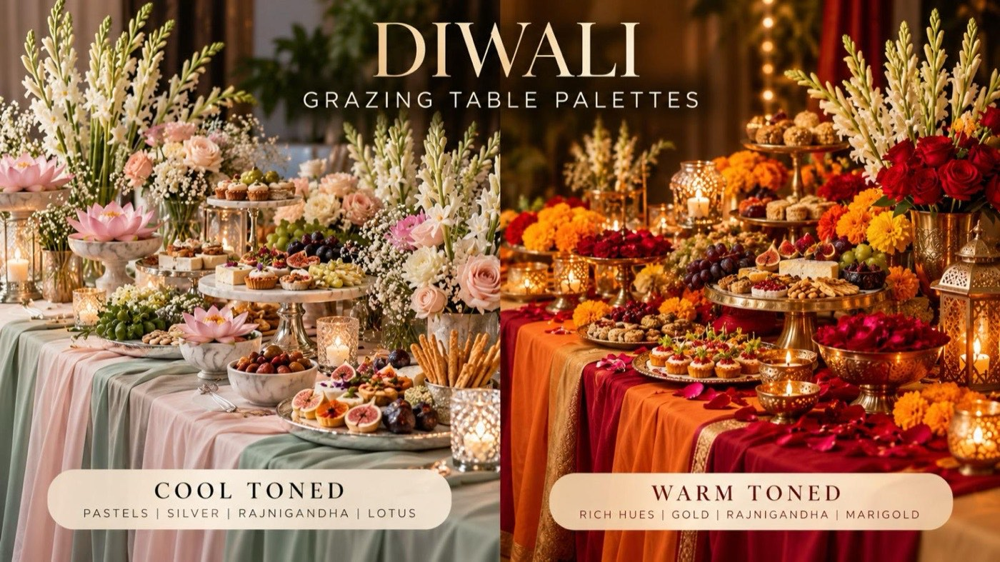
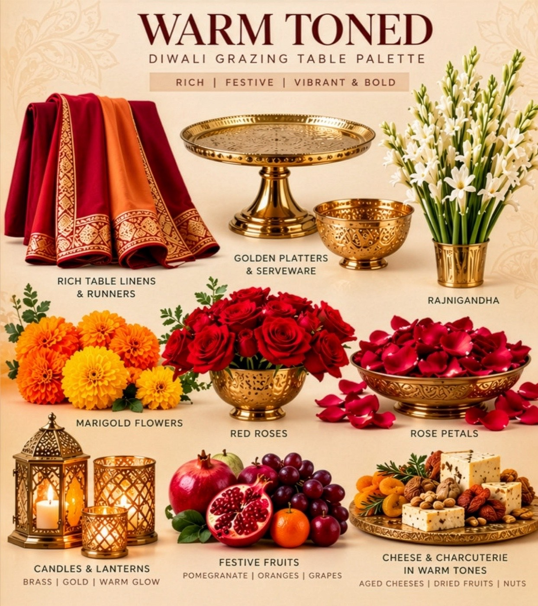
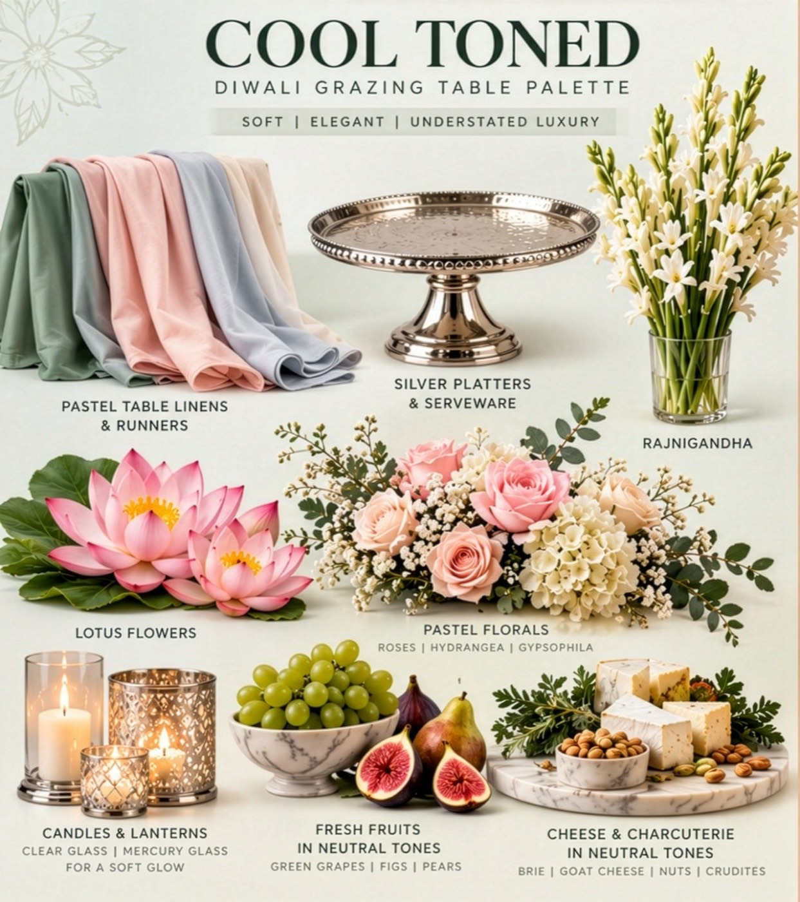

Choose the palette before anything else, and every later choice follows from it: the linen, the metal, the flowers, the light and even the fruit and cheese. Warm is festive opulence. Cool is understated luxury.

| Warm-toned | Cool-toned | |
|---|---|---|
| Mood | Rich, festive, vibrant and bold | Soft, elegant, understated luxury |
| Table linens and runners | Rich red and orange | Pastel |
| Platters and serveware | Golden | Silver |
| Florals | Rajnigandha, marigolds, red roses and rose petals | Rajnigandha, lotus flowers, and pastel roses, hydrangea and gypsophila |
| Candles and lanterns | Brass and gold, for a warm glow | Clear glass and mercury glass, for a soft glow |
| Fruit | Pomegranate, oranges and grapes | In neutral tones: green grapes, figs and pears |
| Cheese and charcuterie | In warm tones: aged cheeses, dried fruits and nuts | In neutral tones: brie, goat cheese, nuts and crudités |


The palette decides the colours. These six notes decide whether the table looks considered or crowded.
Start with the room. Warm wood, brass fittings and candlelight lean toward the warm palette; daylight, white walls and a garden setting suit the cool one.
Then the evening. A loud, celebratory family night carries the warm palette well. A quieter, more elegant dinner suits the cool one. Neither is more Diwali than the other.